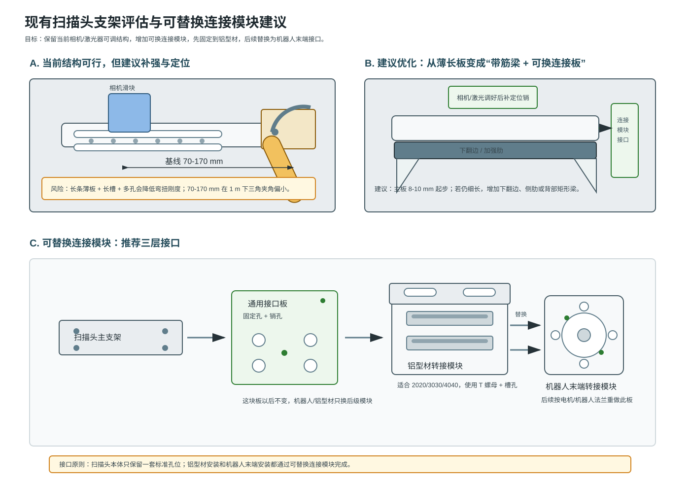

现有扫描头支架评估与连接模块建议
日期：2026-07-07
结论：当前结构可以用于初步实验，但更像第一版调试支架。建议重点加强主板抗扭、相机滑块防偏摆、激光器双点锁紧，并增加“通用接口板 + 可替换连接模块”。
1. 示意图

2. 主要风险
- 基线 70-170 mm 在 1 m 工作距离下对应约 4.0-9.6 deg，Z 向灵敏度偏弱。
- 长条主板、长槽和多排圆孔会降低弯扭刚度。
- 激光器圆弧槽最好改成中心转轴 + 双弧形锁紧槽。
- 相机直槽调基线需要增加导向边、定位台阶或定位销，避免偏摆。
3. 孔径建议
| 螺钉 | 当前通孔 | 建议 |
|---|
| M3 | 3.3 mm | 普通圆孔可以；若长槽建议 3.6-4.0 mm 并配垫圈 |
| M4 | 4.5 mm | 普通圆孔合适；若长槽建议约 5.0 mm 并配大垫圈或压板 |
反复调节的实验件建议优先用圆柱头内六角螺钉 + 平垫圈。沉头螺钉会自动找锥面中心，不利于微调。
4. 连接模块建议
扫描头主支架
↓
通用接口板：以后尽量不变
↓
可替换连接模块
├─ 铝型材转接模块：当前实验用
└─ 机器人末端转接模块：后续替换
通用接口板建议厚 8-10 mm，使用 4 x M4 固定孔 + 2 个 Phi4H7 或 Phi5H7 定位销孔。铝型材转接模块可以先做 L 型转接座：一面连 3030/4040 铝型材，另一面连通用接口板，两侧加三角筋。
5. 参考图